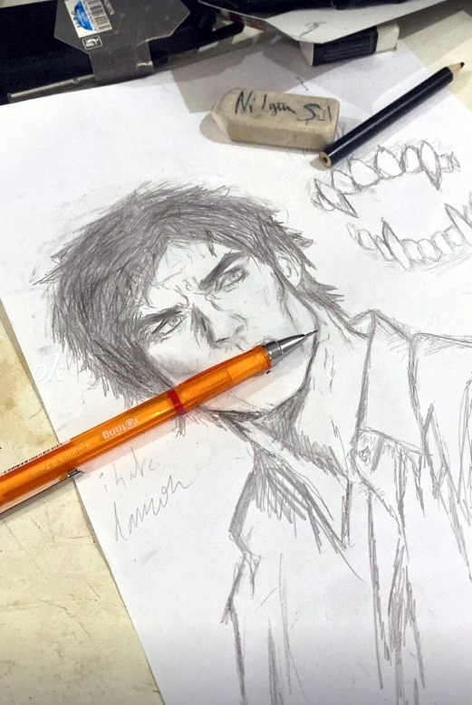

Nilgün's always in the middle of something. Usually three things. Mostly she draws — , mostly people, usually at some hour when she should be asleep. She listens to more music in a year than most people manage in five, and plays guitar. She'll tell you she hates naps and loves sleeping, and both are true. Somewhere in here is a drawing she gave away.

“I made way too many bowls now i only eat in bowls..”
She took sculpture. She made other things too. But mostly bowls.
76,000
minutes of music last year. That is fifty-three days.
Older Playboi Carti, on repeat. Jeff Buckley's Grace, on a different kind of repeat.
She also sings, and plays guitar. Not for an audience. Yet.
Watching
- Demon Slayer
- Invincible
- Cyberpunk Edgerunners
- JoJo's Bizarre Adventure
- Attack on Titan
- Evangelion
Read Death Note and Tokyo Ghoul. Gave up on One Piece, which is fair. Finished Dexter.
Loves
- Nights. Travelling, going out.
- Skateboarding
- Taking pictures
- Cold, fresh, grainy strawberry juice
- Vanilla
- Asian food
- Afro hair. Russian accents.
- Sleeping
- Self-love and self-respect
“i love tanja so much i wish i could go back.”
Doesn't love
Naps, despite the sleeping. Flowery perfume. Seafood. Exam season.
One more thing.
Well starting off happy birthday Nil, i hope you enjoyed the gift, you're probably one of the persons i trust the most on this planet and honestly i always found it cool how u always had something going on, u tried so many different things that i've never seen anyone do once and honestly all of it is just too much you probably have done more things than half of our class combined which makes u quite the abnormal one but also quite unique, mohim happy birthday layj3lha 3lik bs7a w salama w yarbi ishl 3lik lyoma ( hir bo7do ) w sara7a saybt had l3jb js because i thought u would like it more than anything i could've given, mohim thlay frask, laykml lik bl khir m3a youssef